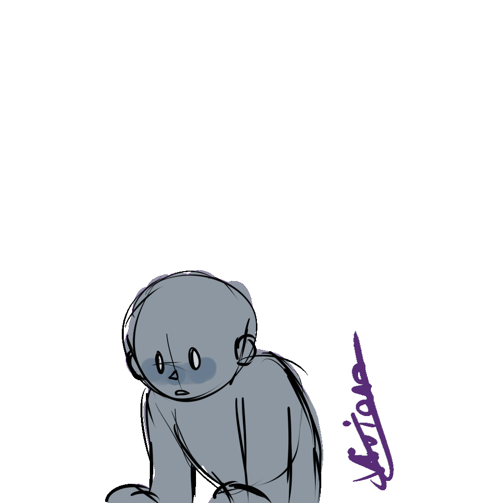

Wax Cherry Studio este un club de animație 2D în cadrul Liceului de Informatică "Grigore Moisil", care urmărește introducerea desenelor animate calitative românești prin intermediul copiilor talentați ai liceului nostru.
Activitățile studioului se desfășoară atât online, cât și fizic în școală, acest lucru depinzând și de domeniile pe care se înscrie elevul. Aceștia au posibilitatea de a se înscrie pe mai multe profile și a fi mentorați chiar și pe ceea ce nu s-au înscris deoarece accesul este deschis pentru toți din comunitate.
Programul a fost propus de eleva Pașaniuc Elena - Viviana ca mentor și organizator, sprijinită de doamnele profesoare îndrumătoare care susțin activitățile : Munteanu Anișoara și Adochiei Narcisa.
În primul an al apariției sale, clubul a realizat bazele animației: "O felie pentru toți", animație care
abordează tema antibulling într-un mod diferit față de standardele banale de pe piață și care pune în
evidență probleme pe termen lung care pot apărea în urma fenomenului provocat de bulling.